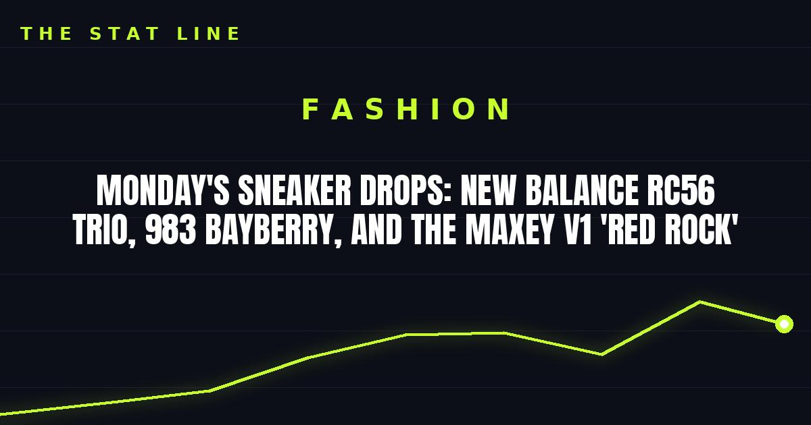

Monday's Sneaker Drops: New Balance RC56 Trio, 983 Bayberry, and the Maxey v1 'Red Rock'
Today's board is a New Balance day: three RC56 colorways at $150, the 983 'Bayberry Concrete' at $160, Numeric 442s at $125, and Tyrese Maxey's v1 'Red Rock' at $130 — with the Space Jam pack coming Thursday.

Monday's drop board belongs to New Balance, with a full slate of runners and skate shoes landing today — plus one signature basketball colorway. Here is what is dropping, what it costs, and where to get it.
Today — Monday, November 2
New Balance RC56 — $150. Three colorways land today: "Timberwolf Stoneware," "Rich Oak," and "Nordic Green." The RC56 is New Balance's retro-runner entry for the season, and three colorways at once means you are not stuck with one palette if your size sells through in another.
New Balance 983 "Bayberry Concrete" — $160. The 983 is the chunkier, made-for-the-trail end of the New Balance lineup, and the Bayberry Concrete colorway keeps it in muted, wearable territory.
New Balance Numeric 442 — $125. Two colorways: "White Dark Night" and "Dark Night White." The Numeric line is New Balance's skate offering, and at $125 these are the cheapest pairs on today's board — and the easiest to wear daily without babying them.
New Balance Maxey v1 "Red Rock" — $130. Tyrese Maxey's signature shoe gets a new colorway today: black with Red Rock accents and an all-black inner lining, available through New Balance and select retailers. The Maxey v1 debuted in early October, and the Red Rock follows the earlier Light Arctic Grey colorway at the same $130 price.
The week ahead
Thursday, November 5: the big one — six Space Jam 30th anniversary Jordans drop together: the Air Jordan 3 "Lola Bunny" ($160), Air Jordan 1 Mid SE "Air Bugs" ($165), Jordan Son of Mars Low "Lunar Tunes" ($165), Air Jordan OG "Amusement Park" ($155), Air Jordan 1 Low SE "Lola Bunny" ($130), and Jordan Trunner O/S "Planet" ($130).
Saturday, November 7: the Air Jordan 6 "White Infrared" ($215). Early resale trackers already have most sizes listed under retail — a size 8 was asking $172 in the October 30 check — so this one may be more gettable than the hype suggests.
Hats
No new Hat Club drop surfaced for today. The most recent verified Hat Club release remains the Spooky Season 2026 59FIFTY collection from October 24 — seven team hats in spooky-themed colorways with commemorative side patches, plus two Spooky pins. If you are hunting fitteds this week, that is where the latest exclusives live.
Release dates and prices can shift, so check the SNKRS app and New Balance's site the morning of each drop.
Sources
• Claqa — Sneaker releases this week: November 2, 2026
• Sole Retriever — Sneaker release dates
• Wisevoter — New Balance to release Maxey v1 Red Rock sneaker
• Strictly Fitteds — Hat Club Spooky Season 2026 59FIFTY collection